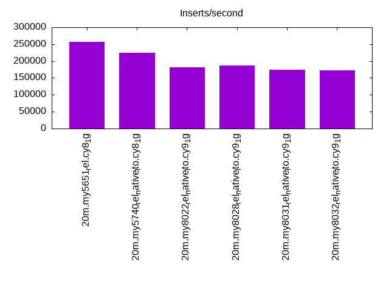
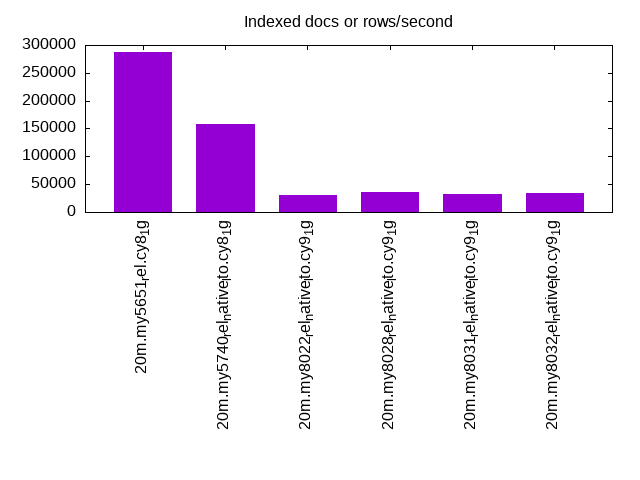
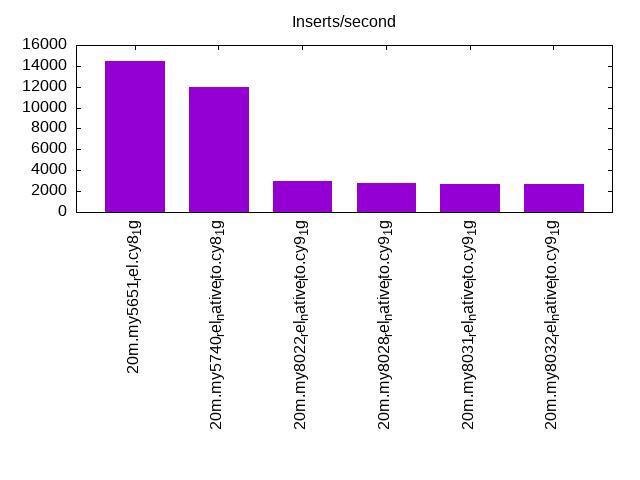
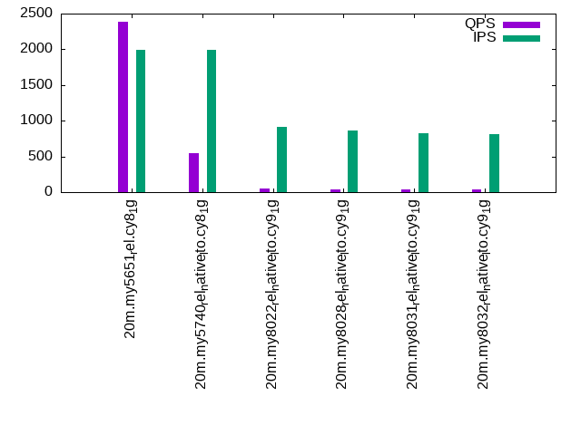
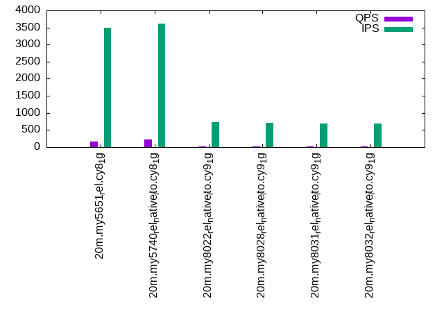

Introduction
This is a report for the insert benchmark with 20M docs and 4 client(s). It is generated by scripts (bash, awk, sed) and Tufte might not be impressed. An overview of the insert benchmark is here and a short update is here. Below, by DBMS, I mean DBMS+version.config. An example is my8020.c10b40 where my means MySQL, 8020 is version 8.0.20 and c10b40 is the name for the configuration file.
The test server has 8 AMD cores, 16G RAM and an NVMe SSD. It is described here as the Beelink. The benchmark was run with 4 clients and there were 1 or 2 connections per client (1 for queries, 1 for inserts). The benchmark loads 20M rows without secondary indexes, creates secondary indexes, loads another 20M rows then does 3 read+write tests for one hour each that do queries as fast as possible with 100, 500 and then 1000 writes/second/client concurrent with the queries. There is 1 table. The database is cached by the OS but not by InnoDB. Clients and the DBMS share one server. The per-database configs are in the per-database subdirectories here.
The tested DBMS are:
- my5651_rel.cy8_1g - InnoDB and MySQL 5.6.51, the cy8_1g config and compiled with CMAKE_BUILD_TYPE=Release -O3
- my5740_rel_native_lto.cy8_1g - InnoDB and MySQL 5.7.40, the cy8_1g config and compiled with CMAKE_BUILD_TYPE=Release -O3 -flto
- my8022_rel_native_lto.cy9_1g - InnoDB and MySQL 8.0.22, the cy9_1g config and compiled with CMAKE_BUILD_TYPE=Release -O3 -flto
- my8028_rel_native_lto.cy9_1g - InnoDB and MySQL 8.0.28, the cy9_1g config and compiled with CMAKE_BUILD_TYPE=Release -O3 -flto
- my8031_rel_native_lto.cy9_1g - InnoDB and MySQL 8.0.31, the cy9_1g config and compiled with CMAKE_BUILD_TYPE=Release -O3 -flto
- my8032_rel_native_lto.cy9_1g - InnoDB and MySQL 8.0.32, the cy9_1g config and compiled with CMAKE_BUILD_TYPE=Release -O3 -flto
Contents
- Summary
- l.i0: load without secondary indexes
- l.x: create secondary indexes
- l.i1: continue load after secondary indexes created
- q100.1: range queries with 100 insert/s per client
- q500.1: range queries with 500 insert/s per client
- q1000.1: range queries with 1000 insert/s per client
Summary
The numbers are inserts/s for l.i0 and l.i1, indexed docs (or rows) /s for l.x and queries/s for q*.2. The values are the average rate over the entire test for inserts (IPS) and queries (QPS). The range of values for IPS and QPS is split into 3 parts: bottom 25%, middle 50%, top 25%. Values in the bottom 25% have a red background, values in the top 25% have a green background and values in the middle have no color. A gray background is used for values that can be ignored because the DBMS did not sustain the target insert rate. Red backgrounds are not used when the minimum value is within 80% of the max value.
| dbms | l.i0 | l.x | l.i1 | q100.1 | q500.1 | q1000.1 |
|---|---|---|---|---|---|---|
| 20m.my5651_rel.cy8_1g | 256410 | 287143 | 14440 | 5885 | 2390 | 171 |
| 20m.my5740_rel_native_lto.cy8_1g | 224719 | 158268 | 11990 | 3756 | 543 | 222 |
| 20m.my8022_rel_native_lto.cy9_1g | 181818 | 30454 | 3007 | 57 | 45 | 29 |
| 20m.my8028_rel_native_lto.cy9_1g | 186916 | 35512 | 2747 | 52 | 41 | 26 |
| 20m.my8031_rel_native_lto.cy9_1g | 173913 | 33005 | 2720 | 52 | 40 | 26 |
| 20m.my8032_rel_native_lto.cy9_1g | 172414 | 33612 | 2721 | 52 | 40 | 25 |
This table has relative throughput, throughput for the DBMS relative to the DBMS in the first line, using the absolute throughput from the previous table.
| dbms | l.i0 | l.x | l.i1 | q100.1 | q500.1 | q1000.1 |
|---|---|---|---|---|---|---|
| 20m.my5651_rel.cy8_1g | 1.00 | 1.00 | 1.00 | 1.00 | 1.00 | 1.00 |
| 20m.my5740_rel_native_lto.cy8_1g | 0.88 | 0.55 | 0.83 | 0.64 | 0.23 | 1.30 |
| 20m.my8022_rel_native_lto.cy9_1g | 0.71 | 0.11 | 0.21 | 0.01 | 0.02 | 0.17 |
| 20m.my8028_rel_native_lto.cy9_1g | 0.73 | 0.12 | 0.19 | 0.01 | 0.02 | 0.15 |
| 20m.my8031_rel_native_lto.cy9_1g | 0.68 | 0.11 | 0.19 | 0.01 | 0.02 | 0.15 |
| 20m.my8032_rel_native_lto.cy9_1g | 0.67 | 0.12 | 0.19 | 0.01 | 0.02 | 0.15 |
This lists the average rate of inserts/s for the tests that do inserts concurrent with queries. For such tests the query rate is listed in the table above. The read+write tests are setup so that the insert rate should match the target rate every second. Cells that are not at least 95% of the target have a red background to indicate a failure to satisfy the target.
| dbms | q100.1 | q500.1 | q1000.1 |
|---|---|---|---|
| my5651_rel.cy8_1g | 399 | 1994 | 3485 |
| my5740_rel_native_lto.cy8_1g | 399 | 1994 | 3605 |
| my8022_rel_native_lto.cy9_1g | 395 | 920 | 726 |
| my8028_rel_native_lto.cy9_1g | 390 | 864 | 702 |
| my8031_rel_native_lto.cy9_1g | 394 | 822 | 681 |
| my8032_rel_native_lto.cy9_1g | 390 | 815 | 689 |
| target | 400 | 2000 | 4000 |
l.i0
l.i0: load without secondary indexes. Graphs for performance per 1-second interval are here.
Average throughput:
Insert response time histogram: each cell has the percentage of responses that take <= the time in the header and max is the max response time in seconds. For the max column values in the top 25% of the range have a red background and in the bottom 25% of the range have a green background. The red background is not used when the min value is within 80% of the max value.
| dbms | 256us | 1ms | 4ms | 16ms | 64ms | 256ms | 1s | 4s | 16s | gt | max |
|---|---|---|---|---|---|---|---|---|---|---|---|
| my5651_rel.cy8_1g | 15.998 | 82.881 | 0.990 | 0.117 | 0.013 | 0.108 | |||||
| my5740_rel_native_lto.cy8_1g | 0.530 | 97.489 | 1.825 | 0.141 | 0.015 | 0.118 | |||||
| my8022_rel_native_lto.cy9_1g | 98.133 | 1.395 | 0.445 | 0.026 | 0.145 | ||||||
| my8028_rel_native_lto.cy9_1g | 98.527 | 1.230 | 0.215 | 0.028 | 0.171 | ||||||
| my8031_rel_native_lto.cy9_1g | 98.093 | 1.511 | 0.367 | 0.029 | 0.156 | ||||||
| my8032_rel_native_lto.cy9_1g | 98.221 | 1.407 | 0.348 | 0.024 | 0.134 |
Performance metrics for the DBMS listed above. Some are normalized by throughput, others are not. Legend for results is here.
ips qps rps rmbps wps wmbps rpq rkbpq wpi wkbpi csps cpups cspq cpupq dbgb1 dbgb2 rss maxop p50 p99 tag 256410 0 2121 8.3 189.3 70.9 0.008 0.033 0.001 0.283 29888 63.2 0.117 20 1.3 41.8 1.0 0.108 79950 44752 20m.my5651_rel.cy8_1g 224719 0 0 0.0 207.1 63.4 0.000 0.000 0.001 0.289 24235 64.1 0.108 23 1.3 41.9 1.2 0.118 69625 30067 20m.my5740_rel_native_lto.cy8_1g 181818 0 0 0.0 424.9 53.5 0.000 0.000 0.002 0.301 19779 61.1 0.109 27 1.3 9.9 1.3 0.145 55240 7590 20m.my8022_rel_native_lto.cy9_1g 186916 0 0 0.0 406.4 53.0 0.000 0.000 0.002 0.290 20084 62.7 0.107 27 1.3 9.9 1.4 0.171 56739 24972 20m.my8028_rel_native_lto.cy9_1g 173913 0 0 0.0 427.0 49.7 0.000 0.000 0.002 0.293 18990 59.5 0.109 27 1.3 9.9 1.4 0.156 53342 20977 20m.my8031_rel_native_lto.cy9_1g 172414 0 0 0.0 414.4 49.4 0.000 0.000 0.002 0.293 18829 61.0 0.109 28 1.3 9.9 1.4 0.134 51464 2597 20m.my8032_rel_native_lto.cy9_1g
l.x
l.x: create secondary indexes.
Average throughput:
Performance metrics for the DBMS listed above. Some are normalized by throughput, others are not. Legend for results is here.
ips qps rps rmbps wps wmbps rpq rkbpq wpi wkbpi csps cpups cspq cpupq dbgb1 dbgb2 rss maxop p50 p99 tag 287143 0 38 0.1 794.6 247.6 0.000 0.001 0.003 0.883 4956 37.9 0.017 11 2.7 43.2 1.2 0.019 NA NA 20m.my5651_rel.cy8_1g 158268 0 0 0.0 684.4 125.9 0.000 0.000 0.004 0.814 6054 13.9 0.038 7 3.0 43.5 1.3 0.015 NA NA 20m.my5740_rel_native_lto.cy8_1g 30454 0 0 0.0 704.4 23.3 0.000 0.000 0.023 0.783 5065 4.5 0.166 12 3.0 11.6 1.5 0.045 NA NA 20m.my8022_rel_native_lto.cy9_1g 35512 0 187 12.3 1107.4 35.9 0.005 0.354 0.031 1.035 9998 9.1 0.282 20 3.0 11.6 1.5 0.067 NA NA 20m.my8028_rel_native_lto.cy9_1g 33005 0 174 11.4 1040.4 33.5 0.005 0.355 0.032 1.039 9533 8.8 0.289 21 3.0 11.6 1.5 0.176 NA NA 20m.my8031_rel_native_lto.cy9_1g 33612 0 178 11.6 1056.9 34.1 0.005 0.355 0.031 1.040 9660 9.4 0.287 22 3.0 11.6 1.5 0.109 NA NA 20m.my8032_rel_native_lto.cy9_1g
l.i1
l.i1: continue load after secondary indexes created. Graphs for performance per 1-second interval are here.
Average throughput:
Insert response time histogram: each cell has the percentage of responses that take <= the time in the header and max is the max response time in seconds. For the max column values in the top 25% of the range have a red background and in the bottom 25% of the range have a green background. The red background is not used when the min value is within 80% of the max value.
| dbms | 256us | 1ms | 4ms | 16ms | 64ms | 256ms | 1s | 4s | 16s | gt | max |
|---|---|---|---|---|---|---|---|---|---|---|---|
| my5651_rel.cy8_1g | 3.981 | 63.860 | 30.890 | 1.091 | 0.148 | 0.030 | 3.032 | ||||
| my5740_rel_native_lto.cy8_1g | 1.090 | 63.195 | 33.888 | 1.696 | 0.097 | 0.034 | 2.167 | ||||
| my8022_rel_native_lto.cy9_1g | 0.164 | 23.970 | 39.358 | 34.927 | 1.372 | 0.183 | 0.026 | 8.675 | |||
| my8028_rel_native_lto.cy9_1g | 0.083 | 18.202 | 41.086 | 38.687 | 1.737 | 0.175 | 0.030 | 8.359 | |||
| my8031_rel_native_lto.cy9_1g | 0.032 | 19.195 | 39.892 | 38.727 | 1.943 | 0.182 | 0.029 | 7.840 | |||
| my8032_rel_native_lto.cy9_1g | 0.024 | 19.519 | 39.928 | 38.296 | 2.022 | 0.182 | 0.029 | 7.601 |
Performance metrics for the DBMS listed above. Some are normalized by throughput, others are not. Legend for results is here.
ips qps rps rmbps wps wmbps rpq rkbpq wpi wkbpi csps cpups cspq cpupq dbgb1 dbgb2 rss maxop p50 p99 tag 14440 0 231 0.9 2701.6 100.0 0.016 0.064 0.187 7.092 11269 30.4 0.780 168 7.8 48.3 1.1 3.032 3846 50 20m.my5651_rel.cy8_1g 11990 0 0 0.0 2450.3 86.3 0.000 0.000 0.204 7.367 9080 32.4 0.757 216 7.8 48.3 1.3 2.167 3295 50 20m.my5740_rel_native_lto.cy8_1g 3007 0 0 0.0 1050.8 19.5 0.000 0.000 0.349 6.629 10102 10.5 3.360 279 7.8 16.4 1.5 8.675 600 0 20m.my8022_rel_native_lto.cy9_1g 2747 0 0 0.0 972.4 17.5 0.000 0.000 0.354 6.513 6218 10.4 2.263 303 7.8 16.4 1.5 8.359 600 0 20m.my8028_rel_native_lto.cy9_1g 2720 0 0 0.0 977.5 18.2 0.000 0.001 0.359 6.845 6377 11.1 2.345 326 7.8 16.4 1.5 7.840 599 0 20m.my8031_rel_native_lto.cy9_1g 2721 0 0 0.0 976.6 18.2 0.000 0.001 0.359 6.837 6371 11.1 2.342 326 7.8 16.4 1.5 7.601 599 0 20m.my8032_rel_native_lto.cy9_1g
q100.1
q100.1: range queries with 100 insert/s per client. Graphs for performance per 1-second interval are here.
Average throughput:

Query response time histogram: each cell has the percentage of responses that take <= the time in the header and max is the max response time in seconds. For max values in the top 25% of the range have a red background and in the bottom 25% of the range have a green background. The red background is not used when the min value is within 80% of the max value.
| dbms | 256us | 1ms | 4ms | 16ms | 64ms | 256ms | 1s | 4s | 16s | gt | max |
|---|---|---|---|---|---|---|---|---|---|---|---|
| my5651_rel.cy8_1g | 9.799 | 88.140 | 0.596 | 1.149 | 0.305 | 0.012 | nonzero | 0.607 | |||
| my5740_rel_native_lto.cy8_1g | 7.272 | 89.667 | 0.265 | 1.811 | 0.832 | 0.152 | 0.001 | 0.707 | |||
| my8022_rel_native_lto.cy9_1g | 0.002 | 12.479 | 3.837 | 8.888 | 35.083 | 37.113 | 2.599 | 0.928 | |||
| my8028_rel_native_lto.cy9_1g | 0.003 | 11.239 | 2.980 | 7.970 | 34.181 | 40.190 | 3.432 | 0.004 | 1.705 | ||
| my8031_rel_native_lto.cy9_1g | 0.001 | 10.760 | 3.322 | 7.495 | 34.154 | 40.941 | 3.322 | 0.004 | 1.958 | ||
| my8032_rel_native_lto.cy9_1g | 10.999 | 3.704 | 7.575 | 33.813 | 40.556 | 3.349 | 0.004 | 1.516 |
Insert response time histogram: each cell has the percentage of responses that take <= the time in the header and max is the max response time in seconds. For max values in the top 25% of the range have a red background and in the bottom 25% of the range have a green background. The red background is not used when the min value is within 80% of the max value.
| dbms | 256us | 1ms | 4ms | 16ms | 64ms | 256ms | 1s | 4s | 16s | gt | max |
|---|---|---|---|---|---|---|---|---|---|---|---|
| my5651_rel.cy8_1g | 13.819 | 51.354 | 31.042 | 2.986 | 0.750 | 0.049 | 2.805 | ||||
| my5740_rel_native_lto.cy8_1g | 24.104 | 41.500 | 17.194 | 12.597 | 4.451 | 0.153 | 1.284 | ||||
| my8022_rel_native_lto.cy9_1g | 0.236 | 1.764 | 31.153 | 64.486 | 2.361 | 1.722 | |||||
| my8028_rel_native_lto.cy9_1g | 0.007 | 0.188 | 1.472 | 31.042 | 63.472 | 3.819 | 2.223 | ||||
| my8031_rel_native_lto.cy9_1g | 0.250 | 1.410 | 30.444 | 64.715 | 3.181 | 2.190 | |||||
| my8032_rel_native_lto.cy9_1g | 0.250 | 1.472 | 30.194 | 64.319 | 3.764 | 2.361 |
Performance metrics for the DBMS listed above. Some are normalized by throughput, others are not. Legend for results is here.
ips qps rps rmbps wps wmbps rpq rkbpq wpi wkbpi csps cpups cspq cpupq dbgb1 dbgb2 rss maxop p50 p99 tag 399 5885 15 0.1 1356.1 39.0 0.003 0.025 3.401 100.096 26065 34.7 4.429 472 8.4 48.9 1.1 0.607 1534 32 20m.my5651_rel.cy8_1g 399 3756 8 0.1 1441.1 37.7 0.002 0.033 3.614 96.701 18950 23.6 5.045 503 8.4 49.0 1.4 0.707 1007 16 20m.my5740_rel_native_lto.cy8_1g 395 57 7 0.1 1148.9 15.4 0.118 1.964 2.906 39.874 10832 4.5 189.045 6283 8.4 17.0 1.5 0.928 16 0 20m.my8022_rel_native_lto.cy9_1g 390 52 9 0.1 1121.3 14.7 0.167 2.776 2.872 38.477 7286 4.7 140.920 7272 8.4 17.0 1.5 1.705 16 0 20m.my8028_rel_native_lto.cy9_1g 394 52 10 0.2 1125.3 14.9 0.194 3.008 2.856 38.671 7479 4.9 144.374 7568 8.4 17.0 1.5 1.958 16 0 20m.my8031_rel_native_lto.cy9_1g 390 52 10 0.2 1124.0 14.9 0.202 3.125 2.885 39.042 7463 4.9 144.625 7597 8.4 17.0 1.5 1.516 16 0 20m.my8032_rel_native_lto.cy9_1g
q500.1
q500.1: range queries with 500 insert/s per client. Graphs for performance per 1-second interval are here.
Average throughput:
Query response time histogram: each cell has the percentage of responses that take <= the time in the header and max is the max response time in seconds. For max values in the top 25% of the range have a red background and in the bottom 25% of the range have a green background. The red background is not used when the min value is within 80% of the max value.
| dbms | 256us | 1ms | 4ms | 16ms | 64ms | 256ms | 1s | 4s | 16s | gt | max |
|---|---|---|---|---|---|---|---|---|---|---|---|
| my5651_rel.cy8_1g | 1.565 | 81.072 | 10.250 | 6.512 | 0.600 | nonzero | 0.078 | ||||
| my5740_rel_native_lto.cy8_1g | 0.738 | 77.965 | 4.648 | 3.756 | 9.943 | 2.939 | 0.011 | 0.527 | |||
| my8022_rel_native_lto.cy9_1g | 0.002 | 8.054 | 3.718 | 6.849 | 32.270 | 44.149 | 4.953 | 0.005 | 1.688 | ||
| my8028_rel_native_lto.cy9_1g | 0.001 | 7.663 | 3.119 | 6.196 | 30.676 | 45.849 | 6.487 | 0.011 | 1.521 | ||
| my8031_rel_native_lto.cy9_1g | 7.248 | 3.636 | 6.152 | 30.114 | 45.625 | 7.200 | 0.025 | 1.804 | |||
| my8032_rel_native_lto.cy9_1g | 0.001 | 7.274 | 3.752 | 6.099 | 29.644 | 45.800 | 7.405 | 0.026 | 2.255 |
Insert response time histogram: each cell has the percentage of responses that take <= the time in the header and max is the max response time in seconds. For max values in the top 25% of the range have a red background and in the bottom 25% of the range have a green background. The red background is not used when the min value is within 80% of the max value.
| dbms | 256us | 1ms | 4ms | 16ms | 64ms | 256ms | 1s | 4s | 16s | gt | max |
|---|---|---|---|---|---|---|---|---|---|---|---|
| my5651_rel.cy8_1g | 2.788 | 49.054 | 48.076 | 0.082 | 0.111 | ||||||
| my5740_rel_native_lto.cy8_1g | 1.019 | 35.747 | 42.583 | 19.750 | 0.900 | 0.715 | |||||
| my8022_rel_native_lto.cy9_1g | 0.007 | 2.126 | 8.885 | 58.833 | 30.010 | 0.139 | 2.197 | ||||
| my8028_rel_native_lto.cy9_1g | 0.004 | 1.931 | 9.361 | 56.069 | 32.149 | 0.486 | 1.755 | ||||
| my8031_rel_native_lto.cy9_1g | 1.717 | 8.447 | 54.721 | 34.513 | 0.603 | 3.191 | |||||
| my8032_rel_native_lto.cy9_1g | 0.003 | 1.801 | 7.972 | 54.844 | 34.675 | 0.704 | 2.429 |
Performance metrics for the DBMS listed above. Some are normalized by throughput, others are not. Legend for results is here.
ips qps rps rmbps wps wmbps rpq rkbpq wpi wkbpi csps cpups cspq cpupq dbgb1 dbgb2 rss maxop p50 p99 tag 1994 2390 69 0.8 4010.9 119.9 0.029 0.334 2.011 61.550 18547 27.0 7.761 904 9.5 50.0 1.1 0.078 591 496 20m.my5651_rel.cy8_1g 1994 543 37 0.6 2652.6 73.1 0.067 1.223 1.330 37.522 10469 11.1 19.269 1634 9.5 50.0 1.4 0.527 128 16 20m.my5740_rel_native_lto.cy8_1g 920 45 5 0.1 1139.4 15.7 0.108 1.942 1.238 17.457 10839 5.5 240.327 9756 9.5 18.0 1.5 1.688 16 0 20m.my8022_rel_native_lto.cy9_1g 864 41 7 0.1 1093.7 14.6 0.162 2.867 1.266 17.360 7219 5.7 174.789 11041 9.4 18.0 1.5 1.521 16 0 20m.my8028_rel_native_lto.cy9_1g 822 40 8 0.1 1056.2 14.4 0.188 3.150 1.286 17.908 7143 5.9 177.685 11741 9.4 18.0 1.5 1.804 16 0 20m.my8031_rel_native_lto.cy9_1g 815 40 8 0.1 1042.3 14.2 0.195 3.202 1.279 17.826 7056 5.9 177.281 11859 9.4 18.0 1.5 2.255 16 0 20m.my8032_rel_native_lto.cy9_1g
q1000.1
q1000.1: range queries with 1000 insert/s per client. Graphs for performance per 1-second interval are here.
Average throughput:
Query response time histogram: each cell has the percentage of responses that take <= the time in the header and max is the max response time in seconds. For max values in the top 25% of the range have a red background and in the bottom 25% of the range have a green background. The red background is not used when the min value is within 80% of the max value.
| dbms | 256us | 1ms | 4ms | 16ms | 64ms | 256ms | 1s | 4s | 16s | gt | max |
|---|---|---|---|---|---|---|---|---|---|---|---|
| my5651_rel.cy8_1g | 0.580 | 36.608 | 27.016 | 5.772 | 17.122 | 12.489 | 0.414 | 0.654 | |||
| my5740_rel_native_lto.cy8_1g | 0.171 | 48.457 | 23.990 | 3.873 | 14.458 | 8.640 | 0.410 | 0.791 | |||
| my8022_rel_native_lto.cy9_1g | 0.001 | 7.034 | 3.756 | 5.134 | 22.464 | 44.055 | 17.508 | 0.049 | 2.727 | ||
| my8028_rel_native_lto.cy9_1g | 6.188 | 3.101 | 4.823 | 21.088 | 43.925 | 20.672 | 0.202 | 3.071 | |||
| my8031_rel_native_lto.cy9_1g | 5.954 | 3.536 | 4.881 | 21.441 | 43.382 | 20.611 | 0.196 | 2.911 | |||
| my8032_rel_native_lto.cy9_1g | 5.776 | 3.538 | 4.805 | 21.000 | 43.917 | 20.743 | 0.222 | 2.805 |
Insert response time histogram: each cell has the percentage of responses that take <= the time in the header and max is the max response time in seconds. For max values in the top 25% of the range have a red background and in the bottom 25% of the range have a green background. The red background is not used when the min value is within 80% of the max value.
| dbms | 256us | 1ms | 4ms | 16ms | 64ms | 256ms | 1s | 4s | 16s | gt | max |
|---|---|---|---|---|---|---|---|---|---|---|---|
| my5651_rel.cy8_1g | 4.867 | 47.628 | 27.386 | 17.391 | 2.726 | 0.003 | 1.303 | ||||
| my5740_rel_native_lto.cy8_1g | 0.022 | 32.794 | 41.485 | 24.366 | 1.333 | 0.963 | |||||
| my8022_rel_native_lto.cy9_1g | 0.007 | 4.298 | 4.597 | 44.341 | 46.415 | 0.342 | 2.714 | ||||
| my8028_rel_native_lto.cy9_1g | 0.003 | 3.545 | 5.970 | 45.978 | 43.019 | 1.485 | 3.039 | ||||
| my8031_rel_native_lto.cy9_1g | 0.001 | 3.568 | 5.683 | 45.146 | 44.061 | 1.542 | 3.582 | ||||
| my8032_rel_native_lto.cy9_1g | 0.001 | 3.581 | 5.759 | 45.425 | 43.694 | 1.541 | 2.760 |
Performance metrics for the DBMS listed above. Some are normalized by throughput, others are not. Legend for results is here.
ips qps rps rmbps wps wmbps rpq rkbpq wpi wkbpi csps cpups cspq cpupq dbgb1 dbgb2 rss maxop p50 p99 tag 3485 171 77 0.6 1795.9 50.8 0.449 3.406 0.515 14.917 7517 10.4 43.958 4865 10.0 50.5 1.1 0.654 32 0 20m.my5651_rel.cy8_1g 3605 222 26 0.5 2220.2 61.0 0.115 2.209 0.616 17.326 8658 13.1 38.982 4719 10.0 50.6 1.3 0.791 48 0 20m.my5740_rel_native_lto.cy8_1g 726 29 2 0.0 756.6 10.8 0.062 1.121 1.042 15.157 5615 4.4 195.644 12265 10.0 18.6 1.5 2.727 0 0 20m.my8022_rel_native_lto.cy9_1g 702 26 3 0.1 722.5 9.9 0.123 2.178 1.029 14.504 4909 4.5 192.508 14117 10.0 18.6 1.4 3.071 0 0 20m.my8028_rel_native_lto.cy9_1g 681 26 4 0.1 714.4 10.0 0.167 2.883 1.048 15.054 5022 4.8 196.943 15059 10.0 18.6 1.4 2.911 0 0 20m.my8031_rel_native_lto.cy9_1g 689 25 4 0.1 716.5 10.0 0.173 2.991 1.040 14.915 5038 4.8 199.126 15178 10.0 18.6 1.4 2.805 0 0 20m.my8032_rel_native_lto.cy9_1g
l.i0
l.i0: load without secondary indexes
Performance metrics for all DBMS, not just the ones listed above. Some are normalized by throughput, others are not. Legend for results is here.
ips qps rps rmbps wps wmbps rpq rkbpq wpi wkbpi csps cpups cspq cpupq dbgb1 dbgb2 rss maxop p50 p99 tag 256410 0 2121 8.3 189.3 70.9 0.008 0.033 0.001 0.283 29888 63.2 0.117 20 1.3 41.8 1.0 0.108 79950 44752 20m.my5651_rel.cy8_1g 224719 0 0 0.0 207.1 63.4 0.000 0.000 0.001 0.289 24235 64.1 0.108 23 1.3 41.9 1.2 0.118 69625 30067 20m.my5740_rel_native_lto.cy8_1g 181818 0 0 0.0 424.9 53.5 0.000 0.000 0.002 0.301 19779 61.1 0.109 27 1.3 9.9 1.3 0.145 55240 7590 20m.my8022_rel_native_lto.cy9_1g 186916 0 0 0.0 406.4 53.0 0.000 0.000 0.002 0.290 20084 62.7 0.107 27 1.3 9.9 1.4 0.171 56739 24972 20m.my8028_rel_native_lto.cy9_1g 173913 0 0 0.0 427.0 49.7 0.000 0.000 0.002 0.293 18990 59.5 0.109 27 1.3 9.9 1.4 0.156 53342 20977 20m.my8031_rel_native_lto.cy9_1g 172414 0 0 0.0 414.4 49.4 0.000 0.000 0.002 0.293 18829 61.0 0.109 28 1.3 9.9 1.4 0.134 51464 2597 20m.my8032_rel_native_lto.cy9_1g
l.x
l.x: create secondary indexes
Performance metrics for all DBMS, not just the ones listed above. Some are normalized by throughput, others are not. Legend for results is here.
ips qps rps rmbps wps wmbps rpq rkbpq wpi wkbpi csps cpups cspq cpupq dbgb1 dbgb2 rss maxop p50 p99 tag 287143 0 38 0.1 794.6 247.6 0.000 0.001 0.003 0.883 4956 37.9 0.017 11 2.7 43.2 1.2 0.019 NA NA 20m.my5651_rel.cy8_1g 158268 0 0 0.0 684.4 125.9 0.000 0.000 0.004 0.814 6054 13.9 0.038 7 3.0 43.5 1.3 0.015 NA NA 20m.my5740_rel_native_lto.cy8_1g 30454 0 0 0.0 704.4 23.3 0.000 0.000 0.023 0.783 5065 4.5 0.166 12 3.0 11.6 1.5 0.045 NA NA 20m.my8022_rel_native_lto.cy9_1g 35512 0 187 12.3 1107.4 35.9 0.005 0.354 0.031 1.035 9998 9.1 0.282 20 3.0 11.6 1.5 0.067 NA NA 20m.my8028_rel_native_lto.cy9_1g 33005 0 174 11.4 1040.4 33.5 0.005 0.355 0.032 1.039 9533 8.8 0.289 21 3.0 11.6 1.5 0.176 NA NA 20m.my8031_rel_native_lto.cy9_1g 33612 0 178 11.6 1056.9 34.1 0.005 0.355 0.031 1.040 9660 9.4 0.287 22 3.0 11.6 1.5 0.109 NA NA 20m.my8032_rel_native_lto.cy9_1g
l.i1
l.i1: continue load after secondary indexes created
Performance metrics for all DBMS, not just the ones listed above. Some are normalized by throughput, others are not. Legend for results is here.
ips qps rps rmbps wps wmbps rpq rkbpq wpi wkbpi csps cpups cspq cpupq dbgb1 dbgb2 rss maxop p50 p99 tag 14440 0 231 0.9 2701.6 100.0 0.016 0.064 0.187 7.092 11269 30.4 0.780 168 7.8 48.3 1.1 3.032 3846 50 20m.my5651_rel.cy8_1g 11990 0 0 0.0 2450.3 86.3 0.000 0.000 0.204 7.367 9080 32.4 0.757 216 7.8 48.3 1.3 2.167 3295 50 20m.my5740_rel_native_lto.cy8_1g 3007 0 0 0.0 1050.8 19.5 0.000 0.000 0.349 6.629 10102 10.5 3.360 279 7.8 16.4 1.5 8.675 600 0 20m.my8022_rel_native_lto.cy9_1g 2747 0 0 0.0 972.4 17.5 0.000 0.000 0.354 6.513 6218 10.4 2.263 303 7.8 16.4 1.5 8.359 600 0 20m.my8028_rel_native_lto.cy9_1g 2720 0 0 0.0 977.5 18.2 0.000 0.001 0.359 6.845 6377 11.1 2.345 326 7.8 16.4 1.5 7.840 599 0 20m.my8031_rel_native_lto.cy9_1g 2721 0 0 0.0 976.6 18.2 0.000 0.001 0.359 6.837 6371 11.1 2.342 326 7.8 16.4 1.5 7.601 599 0 20m.my8032_rel_native_lto.cy9_1g
q100.1
q100.1: range queries with 100 insert/s per client
Performance metrics for all DBMS, not just the ones listed above. Some are normalized by throughput, others are not. Legend for results is here.
ips qps rps rmbps wps wmbps rpq rkbpq wpi wkbpi csps cpups cspq cpupq dbgb1 dbgb2 rss maxop p50 p99 tag 399 5885 15 0.1 1356.1 39.0 0.003 0.025 3.401 100.096 26065 34.7 4.429 472 8.4 48.9 1.1 0.607 1534 32 20m.my5651_rel.cy8_1g 399 3756 8 0.1 1441.1 37.7 0.002 0.033 3.614 96.701 18950 23.6 5.045 503 8.4 49.0 1.4 0.707 1007 16 20m.my5740_rel_native_lto.cy8_1g 395 57 7 0.1 1148.9 15.4 0.118 1.964 2.906 39.874 10832 4.5 189.045 6283 8.4 17.0 1.5 0.928 16 0 20m.my8022_rel_native_lto.cy9_1g 390 52 9 0.1 1121.3 14.7 0.167 2.776 2.872 38.477 7286 4.7 140.920 7272 8.4 17.0 1.5 1.705 16 0 20m.my8028_rel_native_lto.cy9_1g 394 52 10 0.2 1125.3 14.9 0.194 3.008 2.856 38.671 7479 4.9 144.374 7568 8.4 17.0 1.5 1.958 16 0 20m.my8031_rel_native_lto.cy9_1g 390 52 10 0.2 1124.0 14.9 0.202 3.125 2.885 39.042 7463 4.9 144.625 7597 8.4 17.0 1.5 1.516 16 0 20m.my8032_rel_native_lto.cy9_1g
q500.1
q500.1: range queries with 500 insert/s per client
Performance metrics for all DBMS, not just the ones listed above. Some are normalized by throughput, others are not. Legend for results is here.
ips qps rps rmbps wps wmbps rpq rkbpq wpi wkbpi csps cpups cspq cpupq dbgb1 dbgb2 rss maxop p50 p99 tag 1994 2390 69 0.8 4010.9 119.9 0.029 0.334 2.011 61.550 18547 27.0 7.761 904 9.5 50.0 1.1 0.078 591 496 20m.my5651_rel.cy8_1g 1994 543 37 0.6 2652.6 73.1 0.067 1.223 1.330 37.522 10469 11.1 19.269 1634 9.5 50.0 1.4 0.527 128 16 20m.my5740_rel_native_lto.cy8_1g 920 45 5 0.1 1139.4 15.7 0.108 1.942 1.238 17.457 10839 5.5 240.327 9756 9.5 18.0 1.5 1.688 16 0 20m.my8022_rel_native_lto.cy9_1g 864 41 7 0.1 1093.7 14.6 0.162 2.867 1.266 17.360 7219 5.7 174.789 11041 9.4 18.0 1.5 1.521 16 0 20m.my8028_rel_native_lto.cy9_1g 822 40 8 0.1 1056.2 14.4 0.188 3.150 1.286 17.908 7143 5.9 177.685 11741 9.4 18.0 1.5 1.804 16 0 20m.my8031_rel_native_lto.cy9_1g 815 40 8 0.1 1042.3 14.2 0.195 3.202 1.279 17.826 7056 5.9 177.281 11859 9.4 18.0 1.5 2.255 16 0 20m.my8032_rel_native_lto.cy9_1g
q1000.1
q1000.1: range queries with 1000 insert/s per client
Performance metrics for all DBMS, not just the ones listed above. Some are normalized by throughput, others are not. Legend for results is here.
ips qps rps rmbps wps wmbps rpq rkbpq wpi wkbpi csps cpups cspq cpupq dbgb1 dbgb2 rss maxop p50 p99 tag 3485 171 77 0.6 1795.9 50.8 0.449 3.406 0.515 14.917 7517 10.4 43.958 4865 10.0 50.5 1.1 0.654 32 0 20m.my5651_rel.cy8_1g 3605 222 26 0.5 2220.2 61.0 0.115 2.209 0.616 17.326 8658 13.1 38.982 4719 10.0 50.6 1.3 0.791 48 0 20m.my5740_rel_native_lto.cy8_1g 726 29 2 0.0 756.6 10.8 0.062 1.121 1.042 15.157 5615 4.4 195.644 12265 10.0 18.6 1.5 2.727 0 0 20m.my8022_rel_native_lto.cy9_1g 702 26 3 0.1 722.5 9.9 0.123 2.178 1.029 14.504 4909 4.5 192.508 14117 10.0 18.6 1.4 3.071 0 0 20m.my8028_rel_native_lto.cy9_1g 681 26 4 0.1 714.4 10.0 0.167 2.883 1.048 15.054 5022 4.8 196.943 15059 10.0 18.6 1.4 2.911 0 0 20m.my8031_rel_native_lto.cy9_1g 689 25 4 0.1 716.5 10.0 0.173 2.991 1.040 14.915 5038 4.8 199.126 15178 10.0 18.6 1.4 2.805 0 0 20m.my8032_rel_native_lto.cy9_1g
l.i0
- l.i0: load without secondary indexes
- Legend for results is here.
- Each entry lists the percentage of responses that fit in that bucket (slower than max time for previous bucket, faster than min time for next bucket).
Insert response time histogram
256us 1ms 4ms 16ms 64ms 256ms 1s 4s 16s gt max tag 0.000 15.998 82.881 0.990 0.117 0.013 0.000 0.000 0.000 0.000 0.108 my5651_rel.cy8_1g 0.000 0.530 97.489 1.825 0.141 0.015 0.000 0.000 0.000 0.000 0.118 my5740_rel_native_lto.cy8_1g 0.000 0.000 98.133 1.395 0.445 0.026 0.000 0.000 0.000 0.000 0.145 my8022_rel_native_lto.cy9_1g 0.000 0.000 98.527 1.230 0.215 0.028 0.000 0.000 0.000 0.000 0.171 my8028_rel_native_lto.cy9_1g 0.000 0.000 98.093 1.511 0.367 0.029 0.000 0.000 0.000 0.000 0.156 my8031_rel_native_lto.cy9_1g 0.000 0.000 98.221 1.407 0.348 0.024 0.000 0.000 0.000 0.000 0.134 my8032_rel_native_lto.cy9_1g
l.x
- l.x: create secondary indexes
- Legend for results is here.
- Each entry lists the percentage of responses that fit in that bucket (slower than max time for previous bucket, faster than min time for next bucket).
TODO - determine whether there is data for create index response time
l.i1
- l.i1: continue load after secondary indexes created
- Legend for results is here.
- Each entry lists the percentage of responses that fit in that bucket (slower than max time for previous bucket, faster than min time for next bucket).
Insert response time histogram
256us 1ms 4ms 16ms 64ms 256ms 1s 4s 16s gt max tag 0.000 0.000 3.981 63.860 30.890 1.091 0.148 0.030 0.000 0.000 3.032 my5651_rel.cy8_1g 0.000 0.000 1.090 63.195 33.888 1.696 0.097 0.034 0.000 0.000 2.167 my5740_rel_native_lto.cy8_1g 0.000 0.000 0.164 23.970 39.358 34.927 1.372 0.183 0.026 0.000 8.675 my8022_rel_native_lto.cy9_1g 0.000 0.000 0.083 18.202 41.086 38.687 1.737 0.175 0.030 0.000 8.359 my8028_rel_native_lto.cy9_1g 0.000 0.000 0.032 19.195 39.892 38.727 1.943 0.182 0.029 0.000 7.840 my8031_rel_native_lto.cy9_1g 0.000 0.000 0.024 19.519 39.928 38.296 2.022 0.182 0.029 0.000 7.601 my8032_rel_native_lto.cy9_1g
q100.1
- q100.1: range queries with 100 insert/s per client
- Legend for results is here.
- Each entry lists the percentage of responses that fit in that bucket (slower than max time for previous bucket, faster than min time for next bucket).
Query response time histogram
256us 1ms 4ms 16ms 64ms 256ms 1s 4s 16s gt max tag 9.799 88.140 0.596 1.149 0.305 0.012 nonzero 0.000 0.000 0.000 0.607 my5651_rel.cy8_1g 7.272 89.667 0.265 1.811 0.832 0.152 0.001 0.000 0.000 0.000 0.707 my5740_rel_native_lto.cy8_1g 0.002 12.479 3.837 8.888 35.083 37.113 2.599 0.000 0.000 0.000 0.928 my8022_rel_native_lto.cy9_1g 0.003 11.239 2.980 7.970 34.181 40.190 3.432 0.004 0.000 0.000 1.705 my8028_rel_native_lto.cy9_1g 0.001 10.760 3.322 7.495 34.154 40.941 3.322 0.004 0.000 0.000 1.958 my8031_rel_native_lto.cy9_1g 0.000 10.999 3.704 7.575 33.813 40.556 3.349 0.004 0.000 0.000 1.516 my8032_rel_native_lto.cy9_1g
Insert response time histogram
256us 1ms 4ms 16ms 64ms 256ms 1s 4s 16s gt max tag 0.000 0.000 13.819 51.354 31.042 2.986 0.750 0.049 0.000 0.000 2.805 my5651_rel.cy8_1g 0.000 0.000 24.104 41.500 17.194 12.597 4.451 0.153 0.000 0.000 1.284 my5740_rel_native_lto.cy8_1g 0.000 0.000 0.000 0.236 1.764 31.153 64.486 2.361 0.000 0.000 1.722 my8022_rel_native_lto.cy9_1g 0.000 0.000 0.007 0.188 1.472 31.042 63.472 3.819 0.000 0.000 2.223 my8028_rel_native_lto.cy9_1g 0.000 0.000 0.000 0.250 1.410 30.444 64.715 3.181 0.000 0.000 2.190 my8031_rel_native_lto.cy9_1g 0.000 0.000 0.000 0.250 1.472 30.194 64.319 3.764 0.000 0.000 2.361 my8032_rel_native_lto.cy9_1g
q500.1
- q500.1: range queries with 500 insert/s per client
- Legend for results is here.
- Each entry lists the percentage of responses that fit in that bucket (slower than max time for previous bucket, faster than min time for next bucket).
Query response time histogram
256us 1ms 4ms 16ms 64ms 256ms 1s 4s 16s gt max tag 1.565 81.072 10.250 6.512 0.600 nonzero 0.000 0.000 0.000 0.000 0.078 my5651_rel.cy8_1g 0.738 77.965 4.648 3.756 9.943 2.939 0.011 0.000 0.000 0.000 0.527 my5740_rel_native_lto.cy8_1g 0.002 8.054 3.718 6.849 32.270 44.149 4.953 0.005 0.000 0.000 1.688 my8022_rel_native_lto.cy9_1g 0.001 7.663 3.119 6.196 30.676 45.849 6.487 0.011 0.000 0.000 1.521 my8028_rel_native_lto.cy9_1g 0.000 7.248 3.636 6.152 30.114 45.625 7.200 0.025 0.000 0.000 1.804 my8031_rel_native_lto.cy9_1g 0.001 7.274 3.752 6.099 29.644 45.800 7.405 0.026 0.000 0.000 2.255 my8032_rel_native_lto.cy9_1g
Insert response time histogram
256us 1ms 4ms 16ms 64ms 256ms 1s 4s 16s gt max tag 0.000 0.000 2.788 49.054 48.076 0.082 0.000 0.000 0.000 0.000 0.111 my5651_rel.cy8_1g 0.000 0.000 1.019 35.747 42.583 19.750 0.900 0.000 0.000 0.000 0.715 my5740_rel_native_lto.cy8_1g 0.000 0.000 0.007 2.126 8.885 58.833 30.010 0.139 0.000 0.000 2.197 my8022_rel_native_lto.cy9_1g 0.000 0.000 0.004 1.931 9.361 56.069 32.149 0.486 0.000 0.000 1.755 my8028_rel_native_lto.cy9_1g 0.000 0.000 0.000 1.717 8.447 54.721 34.513 0.603 0.000 0.000 3.191 my8031_rel_native_lto.cy9_1g 0.000 0.000 0.003 1.801 7.972 54.844 34.675 0.704 0.000 0.000 2.429 my8032_rel_native_lto.cy9_1g
q1000.1
- q1000.1: range queries with 1000 insert/s per client
- Legend for results is here.
- Each entry lists the percentage of responses that fit in that bucket (slower than max time for previous bucket, faster than min time for next bucket).
Query response time histogram
256us 1ms 4ms 16ms 64ms 256ms 1s 4s 16s gt max tag 0.580 36.608 27.016 5.772 17.122 12.489 0.414 0.000 0.000 0.000 0.654 my5651_rel.cy8_1g 0.171 48.457 23.990 3.873 14.458 8.640 0.410 0.000 0.000 0.000 0.791 my5740_rel_native_lto.cy8_1g 0.001 7.034 3.756 5.134 22.464 44.055 17.508 0.049 0.000 0.000 2.727 my8022_rel_native_lto.cy9_1g 0.000 6.188 3.101 4.823 21.088 43.925 20.672 0.202 0.000 0.000 3.071 my8028_rel_native_lto.cy9_1g 0.000 5.954 3.536 4.881 21.441 43.382 20.611 0.196 0.000 0.000 2.911 my8031_rel_native_lto.cy9_1g 0.000 5.776 3.538 4.805 21.000 43.917 20.743 0.222 0.000 0.000 2.805 my8032_rel_native_lto.cy9_1g
Insert response time histogram
256us 1ms 4ms 16ms 64ms 256ms 1s 4s 16s gt max tag 0.000 0.000 4.867 47.628 27.386 17.391 2.726 0.003 0.000 0.000 1.303 my5651_rel.cy8_1g 0.000 0.000 0.022 32.794 41.485 24.366 1.333 0.000 0.000 0.000 0.963 my5740_rel_native_lto.cy8_1g 0.000 0.000 0.007 4.298 4.597 44.341 46.415 0.342 0.000 0.000 2.714 my8022_rel_native_lto.cy9_1g 0.000 0.000 0.003 3.545 5.970 45.978 43.019 1.485 0.000 0.000 3.039 my8028_rel_native_lto.cy9_1g 0.000 0.000 0.001 3.568 5.683 45.146 44.061 1.542 0.000 0.000 3.582 my8031_rel_native_lto.cy9_1g 0.000 0.000 0.001 3.581 5.759 45.425 43.694 1.541 0.000 0.000 2.760 my8032_rel_native_lto.cy9_1g